Chess Biography
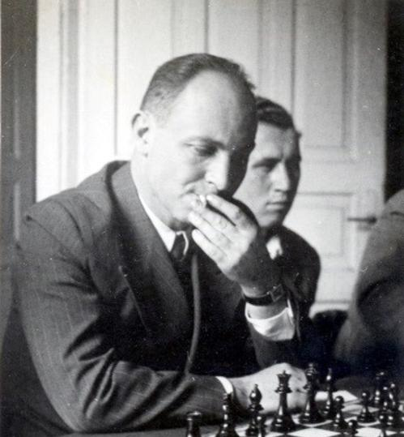
Barav playing in the Lasker Chess Club, Tel Aviv, ca. 1945.
Barav playing in the "Lasker" club, ca. 1945.
Israel Rabinovich (who changed his surname in 1948 to Barav) was born in Karabchiev, Ukraine (Kiev region) on 2nd October 1907 and passed away in Tel Aviv, Israel on 10th July 1979. In 1921 he immigrated with his parents Yechiel and Nechama Rabinovich to Palestine/Israel, where he studied in the Herzlyia Gymnasium in Tel Aviv until the end of 1926. From this period there remains a score sheet of a drawn game he played with his cousin Nachum Labounsky (who later became the first secretary of the Israel chess association), and the score sheets of the six games he played in a match with then well-known Tel Aviv player Churgin (who was 2nd in Tel Aviv Championship 1928). The final score was 4-2 (+4 =0 -2) in favor of Rabinovich-Barav.
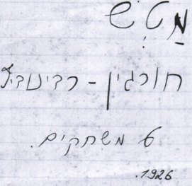
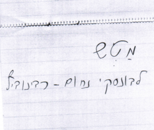
Left: "Match: Chrurgin - Rabinovich [Barav], 6 Games, 1926". Right "Match: Labunsky Nachum - Rabinovich", From Barav's game notebook of the match.
Chess in Germany, 1926–1933
At the end of 1926, Israel Rabinovich-Barav went to Europe where he studied in university, mainly at the "Friedrich-Wilhelms-Universität zu Berlin", but also one year in Paris and one year in Munich, until March 1933. While in Berlin, in January 1927, he joined the "Springer" chess club("SK Springer") and played much chess in various competitions and tournaments, including in league matches for the Sport Club Charlottenburg (S.C.C.) (1) His earliest participation in chess in Berlin was in a 52 players simultaneous display by Aron Nimzowitsch which took place on 9th December 1926. Rabinovich-Barav was one of the 6 players who won a game. (2) Rabinovich-Barav took part in the "SK Springer" summer tournament in May-July 1927 in which 10 players participated. (3) In the Nebenturnier A within the framework of the 2nd Congress of the Deutscher Schachverband (German Chess Association) in Berlin, 17-24 July 1927, he came joint 1st with 5.5/7, having lost no game. (4) In the "SK Springer" winter tournament (November 1927 - June 1928), Rabinovich-Barav took 6th place out of 16: Berthold Koch 13.5, Wilhelm Koch 12.5, Erhard Adeler 12, Herbert Hohensee 11, Ripp 9.5, Rabinovich 9, H. Strasdas 8.5, etc. (5) After the tournament ended, he wrote to his parents that he had won against the top three finishers(the game with Adeler was played on January 29, 1928). He added that despite his disappointment, "obtaining the 6th place out of 16 players in one of Berlin’s best chess clubs, is not bad". (6) Rabinovich-Barav was 1st, with 4/6, in qualifying group B in a competition organized by the German Chess Association for the title of Meister in 1928, ahead of Dr. Witte 4/6, Freiberg, Oehrn and Paul Bodenstein 3/6, Otto Deutschmann 2.5/6 and Eschrich 1.5/6. It was reported that he waived his right to qualify under the Berger-tie system, and played 3 sudden-death games with Dr. Witte, losing one and winning 2. Rabinovich-Barav then played for the title against Kurt Paul Otto Joseph Richter (who won the qualifying group A with 6/6) to whom he lost 1.5-0.5. (7)
In group A of the qualifying round for the 1929 Berlin Chess Association’s championship (there were 4 such groups, the first 3 players in each group reached the final round), Rabinovich-Barav achieved 2nd place (on the application of the Berger tie-break system) with 7.5/11, after Councillor Bernhard Richter and Bauschke, who came joint 1st with 8 points, and ahead of Ohern 7.5, Baron 7, Werner-Eberhard Kunerth and Heinz Nowarra 6, etc. (8) In the finals, Rabinovich-Barav came joint 3rd (together with Paul Waechter and Herbert Dahl) with 7 points in 11 games, ahead of Ullrich 6.5, Dr. Prober 5, B.Richter 4.5, Schneider and Barensfeld 3, Bauschke and Deutschmann, 2.5. The joint winners were Strasdas and Adeler with 9 points. (9)
Several of Rabinovich-Barav’s games have been published in German periodicals (the spelling of his name in German is Rabinowitsch). His win against Paul Waechter in the 1929 Berlin Chess association championship, one of the best games he played in Berlin, was published in Schachwart (10) and in Vossiche Zeitung. (11) In class 1 group of the Berlin Chess Association summer tournament 1931, Rabinovich-Barav came joint first (with Kurt Gumprich, Wilhelm Koch and Strasdas) with 6.5/9, (12) with no losses. (13) The games he won against Braun (who came joint third with 5/9) and against Oppermann were published in Schachwart (14) as was the game he drew with W. Koch. (15) In the 1931/32 Preliminary qualifying group C for the winter tournament of the Berlin club "Schachgesellshaft", which he seems to have by then joined, Rabinovich-Barav came first with 5.5/7, winning against Karl Helling (4th place with 4.5/7) and against Rudolf Elstner(5th place with 4/7), and drawing with Friedrich Saemisch (joint 2nd place with 5/7). (16) The games he won against Elstner and against Moser were published in Schachwart. (17) He did not participate in the final round, since he had already left for Munich. (18)
In Berlin, Rabinovich-Barav played in numerous Blitz tournaments which took place, mainly at the Cafe König.¨In the "smokers" masters group of the tournament organized on 9th August 1928 by the Berlin Chess Association (there were altogether 7 groups of 12 players each), he came 4th with 8/11 after Sämisch 10.5/11, Carl Ahues 10/11 and Bernhard Kagan with 8.5/11. (19) In a Blitz tournament at the same location, which was played on October 23, 1930, he was 2nd in his group with 5.5 points after Sämisch 9 points, and ahead of Ahues, Erwin Kipke and Simon Rotenstein 5 points. (20) On 4,11,18 and 25 November 1931, Rabinovich-Barav played in a Blitz tournament at the cafe König in which 16 players participated. He finished in the 5th place with 51/60, after Sämisch 56/60, Helling 54/60, Ludwig Rellstab 52.5/60, and K. Richter 52/60, ahead of inter alia, Rotenstein 50/60, Daniel Noteboom 39/60 and Leo Kreisberg 36.5/60. (21) Rabinovich-Barav came 4th with 8/11 (after B. Koch 10, Strasdas & W. Koch 9, and ahead of Hohensee 7.5, Robert Modrach 6, Friedrich Furchert 5, Lehmann 4.5) in a promotional Blitz tournament organized on June 24, 1928 under the auspices of the "SK Springer" in the gardens of the Schultheiss brewery. (22) He came first with 10 points in the "SK Springer" Blitz tournament on 15th September 1928, ahead of W. Koch 8.5, H. Dahl and B. Koch 7.5. (23) In the first class group of the Blitz tournament played at the "SK Springer" on November 13, 1928, Rabinovich-Barav was 2nd with 7/9, after the winner B. Koch 8.5/9, and preceding H. Dahl 6/9, Adeler and Ripp 5.5/9. (24) In a Blitz tournament on June 25, 1929 at the "Haus der technik", 54-56a Oranienburgstrasse, Berlin, with 56 participants divided into 4 groups of 14 players each, Rabinovich-Barav shared 3rd place with 9/13, after Ahues with 13/13 and K. Richter with 10/13, and ahead of Erwin Kipke 7.5/13, Immo Engert and B. Koch 7/13. (25) Having moved to Munich, Rabinovich-Barav participated there in the Munich chess association championship Münchner Schachverbandes (October 1932 - January 1933). He finished with 3.5/9 in the preliminary qualifying group I. 1st came Heinrich Best with 7/9, the 2nd was Anton Boehm with 6/9. (26) In March 1933, Israel Rabinovich Barav returned to Israel, to Haifa.
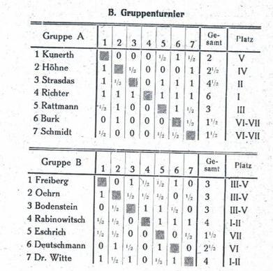
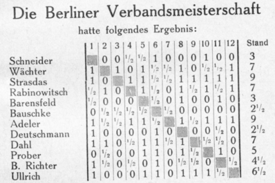
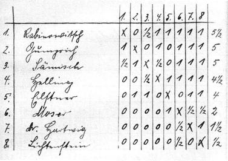
Barav ("Rabinowich") in 1st place, 1931/1932 Schachgesellschaft Berlin Winter Tournament, qualifying round; handwritten crosstable by B. Koch.
Chess in Palestine / Israel, 1944–1964
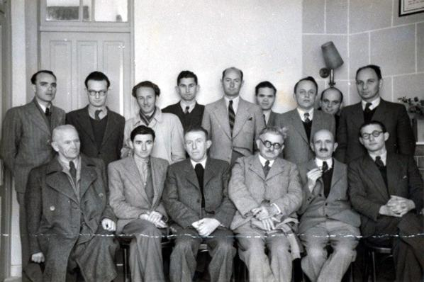
Palestine Championship of 1945, held in tel Aviv. Standing, r. to l.: Barav, Gruengard, Dobkin(?), Yosha, Smiltiner, Hon, Vogel(?), Greenberg (?), Wolfinger. Sitting, r. to l.: Aloni, Blass, Macht, unknown, Porat, Unknown.
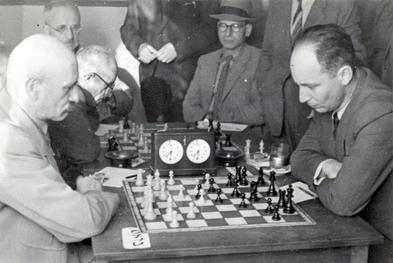
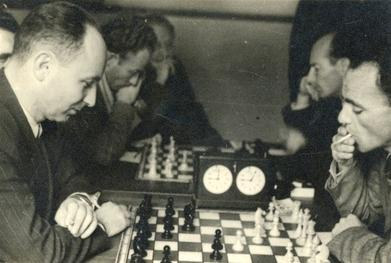
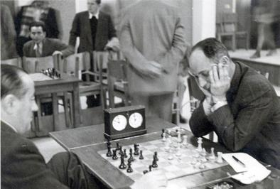
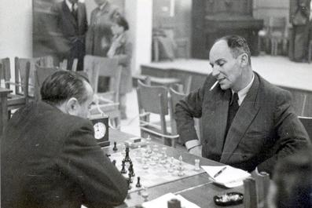
As just said, in 1933 Barav returned to Haifa, in what was then the British Mandate for Palestine. In 1940 he moved to Tel Aviv, where he joined the "Emanuel Lasker" chess club and was, for a period, its chairman. In 1944 (January 15 - April 1) he took part in the "Lasker" club Jubilee ("Yovel") tournament, in which he finished 2nd with 10/14, drawing with Yosef Porat who came 1st with 12/14 and winning against, inter alia, Yosef Dobkin (4th place with 9.5/14) and Israel Yosef Kniazer (13th place with 4.5/14). (27) His win against Vidor who was 11th with 5/14, is regarded as one of Rabinovich-Barav’s most spectacular games and has been published in various books and periodicals. (28) In 1945, Rabinovich-Barav got 3rd place in the Palestine/Israel chess championship with 8/13. The tournament was held in "Emanuel Lasker" chess club in Tel Aviv from February 24 to April 21, 1945. Rabinovich-Barav defeated Izak Aloni (who won the competition with 11/13), drew with Foerder/Porat who came 2nd with 10.5/13 and with Moshe Aba Blass who was 4th with 7.5/13, and won against inter alia Kniazer who came 6th with 7/13 and Shlomo Smiltiner who finished in 10th place with 6/13 (29). He was then described as "the stormy petrel of chess players, who delights in brilliant combinations." (Palestine Post, 25.4.1945, p. 2). A description of a chess player as a "stormy petrel" has been made by reference to P. Richardson and Aron Nimzowitsch. In 1948 Rabinovich-Barav was the first chess player to have made a simultaneous display in a military camp near Tel Aviv that ended with result (+16 =0 –1). (30) On December 18, 1948 he made another simultaneous exhibition against 22 soldiers, this time at the Tel Aviv "Lasker" chess club. The score was +18 -1 =3. (31) The 1st Independent State of Israel's chess championship was held in Tel Aviv (9 rounds), Haifa (2 rounds), Rishon LeZion (1 round) and Hedera (1 round) from February 1, 1951 to March 31, 1951. Rabinovich-Barav together with other 13 players, participated in this competition, of which he was, together with his friend Dr. Yehuda Grunengard, one of the principal organizers. He shared 8-9 place with Ernst Fisher (6/13), drawing with Menachem Oren (Chwojnik) who won the championship (9/13), and with Aloni, who shared 5-7 place (7/13) and winning against strong players such as Foerder-Porat and Smiltiner who shared 10-11 place (5.5/13). (32) This competition was considered especially strong and it was pointed out that the score difference between the winner and the competitor who came last was only 4.5 points. (33) In April 1951 Rabinovich-Barav played simultaneous games in Kibbbutz Afikim in the Jordan Valley on 20 boards, which resulted in the score +18 = 2 -0. (34) In the first rating by the Israel Chess Federation in 1952, Israel Rabinovich-Barav was designated as one of the 14 national masters (in addition to two international masters: Moshe Czerniak and Foerder-Porat). (35)
He served for some years as chairman of the Israel Chess Association and in 1954 accompanied the Israeli team to the Amsterdam Olympiad. (36) In the early 1950s Rabinovich-Barav together with some other players left "Lasker" club and joined the "Richard Reti" chess club, which was founded in Tel Aviv in 1953. He played on 3rd board of "Reti" in the 1956 Israeli Major league. In the match against "Lasker" he drew with Israel Dyner. On the 1st board Smiltiner ("Reti") defeated Aloni ("Lasker"). Dr. Oren (2nd board) and Friedman (5th board) from "Lasker" won against "Reti" players Blass and Wolfinger respectively. Zadok Domnitz (4th board) and Gutti (6th board) of the "Lasker" team drew, respectively, with Rauch and Dr. Grunegard from "Reti". The final result of the "Lasker"-"Reti" match was 3.5-2.5. (37) At the same year Rabinovich-Barav shared 1st place (with Rauch and Smiltiner) with 10/14 at the "Reti" club championship, ahead of Blass and Binour with 9.5 points. (38) In the 1958 "Reti" club championship 12 players participated. Rabinovich-Barav was 3rd with 7.5/11, after Yair Kraidman (8.5/11) and Smiltiner (8/11), ahead of Blass (7/11), Persitz (6/11), Dr. Grunegard (5.5/11), etc. (39). In 1960 Rabinovich-Barav played on 3rd board of "Reti" club in the Major League match against "Lasker" club. The match between the best 2 teams in Israeli League was held on July 2, 1960 in the 6th round, one round before the end of the tournament. After 5 rounds "Lasker" had 23.5 points, only 0.5 point ahead of "Reti". He won against Domnitz in the only game he played for the "Reti" team in the 1960 league competition, where he was registered on 3rd board. On the first two boards "Lasker" scored 2 full points, Aloni - Persitz 1-0 and Dr.Oren - Smiltiner 1-0. On the 4th board Grunegard ("Reti") drew with Friedman ("Lasker"), on the 5th board Wolfinger ("Reti") defeated Kagan ("Lasker") and on the last board Zilberman ("Reti") drew with Tcherniavsky ("Lasker"). The final result was 3-3. (40) In the last round "Lasker" had easier opponent then "Reti" and won the League championship with 30.5 points. "Reti" was 2nd with 27.5 points. (41) In 1964 Rabinovich-Barav took part in the "Reti" Jubilee ("Yovel") 11 rounds Swiss tournament that was held in Tel Aviv from March 25 to May 27. The press wrote: "The appearance of the veteran master I. Barav (Rabinovich) after long absence elicits great interest". (42) After a strong start he was among tournament's leaders, having 3.5 points after 5 rounds 5/7 after winning against Smiltiner in round 7 and 6/10 after defeating Atidi in round 10. The last part of the tournament wasn't successful for him. The winner of of the tournament was Leonid Bobis 9/11 preceding Shimon Kagan (8/11) and Yair Kraidman (7/11). (43) This was the last chess competition in which Rabinovich-Barav participated.
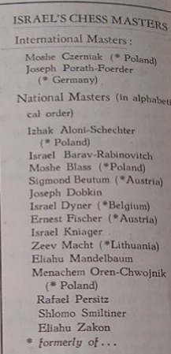
References & Sources
1) Family archive, documents and letters of Israel Rabinovich-Barav - courtesy of Dr. Ami Barav.
2) Letter sent by Israel Rabinovich to his parents, December 14, 1926.
3) Schachwart chess magazine (organ of the Brandenburg chess club, Berlin), 1927, p. 167.
4) Schachwart, 1927, p. 172. The Deutscher Schachverband (German Chess Association) was a short lived rival organization to the Deutscher Schachbund (German Chess Federation).
5) Schachwart, 1928, p. 161.
6) Letter sent by Israel Rabinovich to his parents, June 20, 1928.
7) Article in Schachwart, 1928, p. 165, with the comment that Rabinovich was, probably, the strongest among the competitors. This is told in A. McGowan, Kurt Richter, a chess biography with 499 games (McFarland & company, Inc., publishers,
2018) , pp.34-35.
8) Schachwart chess magazine, 1929, p. 71.
9) The German newspaper Hamburgischer Correspondent, 1929, June 16, p. 16, and Schachwart, June 1929, pp. 105-106.
10) Article in Schachwart, June 1929, pp. 106-107, entitled Zertrümmert ("Destroyed"), with the comment: "Rabinovich, who also belongs to the 'Springer' club, is a new talent of whom we expect far more already in the next tournament. His game against Wächter is very good."
11) The article Kräftigen Figurenspiel ("Strong piece play") in the German newspaper Vossiche Zeitung, 1929, May 26, p. 12.
12) Schachwart chess magazine, 1931, p. 188.
13) Letter sent by Israel Rabinovich to his parents, September 25, 1931.
14) Schachwart chess magazine, 1931, p. 161, the article Zu späte Rochade ("On castling late") in Schachwart, 1931, p. 190, Schachwart 1931, p. 166.
15) and the article Dem Tod etronned ("Death escaped") in Schachwart, 1931, p. 191. 16) The cross table of this qualifying tournament was handwritten by Berthold Koch and was gracefully communicated to us by Mr. Alan McGowan. 17) Schachwart 1932 pp. 43-45. 18) Deutsche Schachzeitung, March 1932, p. 68. 19) Schachwart chess magazine, 1928, pp. 168-169. 20) Schachwart, November 1930, p. 212, and letter to his parents, November 20, 1930. 21) Schachwart, 1931, pp. 197 & 238. 22) Schachwart, 1928, p. 161. 23) Schachwart, 1928, p. 203, and letter to his parents, October 4, 1928. 24) Schachwart, 1928, p. 243. 25) Schachwart, July 1929, p. 136. 26) Deutsche Schachzeitung, November 1932, p. 328. 27) The Israeli newspaper Davar, January 18, 1944, p. 3, Davar, February 15, 1944, p. 4 and Davar, April 12, 1944, p. 3. 28) The Israeli magazine Schachmat ("Chess"), April 1946, p. 6, the books of Shaul Hon, Hassiyum Beschachmat ("The endgame in Chess"), 1961, p. 30 and Petichot Beschachmat ("Openings in Chess"), 1965, p. 30, the magazine Schachmat, August 1979, p. 176, the newspaper Maariv, 1979, July 20, p. 32 and article by Raphael Persitz with extensive analysis and comments in British Chess Magazine, 1960, pp. 299-302. In the two editions of the Hebrew book Tacharout Amanim Beschachmat ("Chess masters competition"), 1952, 1958 Persitz & Mandelbaum included the comment on p. 92 *** that "this game is, according to many (and it is difficult to argue to the contrary) the most brilliant and glaring of the combinatory games played in our country. Its place in Chess world literature is guaranteed without a doubt, and justifiably." 29) Palestine Post, April 25, 1945, p. 2, and the Hebrew newspaper Al Hamishmar, April 29, p. 2. On his performance, the Palestine Post wrote: "The third prize goes to Israel Rabinovich, the stormy petrel of chess players, who delights in brilliant combinations." 30) Davar Hashavua (weekly supplement of the daily newspaper Davar), September 10, 1948, p. 18. 31) Davar Hashavua, December 31, 1948, p. 17. 32) Al Hamishmar, February 2, 1951, p. 1, Al Hamishmar, April 6, 1951, p. 4, Chess Results 1951-1955 by Gino Di Felice, p. 80, the book Tacharout Amanim Beschachmat, by Persitz & Mandelbaum, 1952, and the newspaper Haboker ("The Morning"), April 1, 1951, p. 4. 33) Article of Eliyahou Schachaf in Al Hamishmar, April 6, 1951, p. 4. 34) Davar Hashavua, April 30, 1951, p. 14. 35) List of the Israeli masters in the 1950s, published by Moshe Czerniak in the first issue of 64 Mishbatzot chess magazine, February 1956, p. 17. 36) Haboker, June 25, 1954, p. 8, and Dvar Hashavua, October 6, 1954, p. 13. 37) Davar, July 6, 1956, p. 7. 38) Davar, July 13, 1956, p. 7. 39) The newspaper LaMerchav, May 2, 1958, p. 4. 40) LaMerchav, February 12, 1960, p. 8, Davar, July 8, 1960, p. 6, and Davar, July 31, 1960, p. 3. 41) Davar, July 31, 1960, p. 3 and Al Hamishmar, July 31, p. 5. 42) Davar, March 26, 1964, p. 4. 43) Davar, April 10, 1964, p. 13, Davar, April 23, 1964, p. 4, Davar, May 7, 1964, p. 4, Maariv, May 15, 1964, p. 58, Davar, May 27, 1964, p. 7, and Davar, June 4, 1964, p. 4. 44) Article of Avraham Yosha in the magazine Schachmat, August 1979, p. 176. 45) Article of Elyahu Schachaf in Davar, July 29, 1979, p. 12.